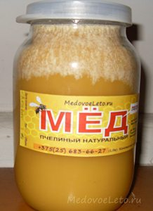
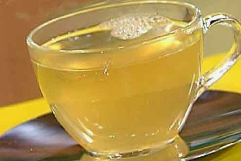

Покупці меду незрідка дивуються з деяких метаморфоз, які відбуваються з медом після його кристалізації.
Одна з таких метаморфоз виявляється в тому, що на внутрішніх стінках банки з медом інколи утворюється білий
наліт, злегка схожий на іній. «Це що цукор?» - з обуренням запитують цінителі натурального продукту?
У цій
статті ми спробуємо розібратися що ж це за білий наліт такий і чому-таки мед біліє. Почну з того, як я
зазвичай відкачую і фасую мед. Вибрані на відкачування рамки, запечатані на дві третини і більш, розкриваю
звичайним пасічним ножем, відокремлюючи забрус (воскову печатку). Річ у тому, що вічка сотів в рамках
розташовані небагато під кутом і дивляться ледве вгору, тому розпечатані рамки ставлю в медогонку сотами в
напрямі зворотному їх подальшому напряму обертання. Так мед легше покидає соти.
Медогонка у мене звичайна 4-х
рамкова з ручним приводом. У міру відкачування меду, його рівень в медогонці неухильно піднімається і настає
момент, коли нижні кінці рамок починають чіпляти за мед. Відкачування припиняється, піднімаю медогонку вище
за рівень ємкості, куди зливатиметься мед. Для цих цілей я використовую емальовані металеві бачки різного
об'єму з кришками. Витікаючи з медогонки, мед проходить подвійну фільтрацію через дводонне металеве сито з
великими і дрібнішими вічками.
Подальше очищення меду від дрібних смітинок відбувається шляхом відстоювання
його протягом декількох днів в емальованих баках. При цьому важкі частки осідають на дно, а дрібні спливають
на поверхню. Після закінчення відстоювання, знімаю верхній шар разом з смітинками, а останній вміст енергійно
перемішую великою дерев'яною ложкою, не торкаючись дна. Вгорі збирається рідша і легша фракція меду, нижче
– густа і важка. Отже перед фасовкою слід перемішати мед, щоб його структура була рівномірною. Далі розливаю
продукт тією ж дерев'яною ложкою по банках. Використовую стандартні скляні банки 0,5 і 1л. У пластик не ллю
принципово, оскільки це не екологічно і мед втрачає у пластиковій тарі частина своїх властивостей.
Таким чином, виходить, що в основному я фасую мед в рідкому вигляді, а процес його подальшої кристалізації
відбувається безпосередньо в скляних банках. Відбувається це протягом місяця, а інколи і раніше. Травневий
мед, наприклад, кристалізується швидше. І ось тут-то на внутрішніх стінках банок з медом і проступає той самий
білий наліт. Тоді як в банках з медом, розфасованим у вже кристалізованому або, як говорять бджолярі, у
вигляді, що «сів», такого нальоту не спостерігається.
За роз'ясненнями я звернувся до дослідного дідуся-бджоляру
з сусіднього села. Виявилось, що на стінках кристалізується натуральна глюкоза, яка входить до складу меду.
Вона ж скупчується на поверхні меду при його відстоюванні в баках. Поява кристалів глюкози на поверхні меду
по-іншому називають ще «цвітінням» або «зацвітанням» меду. Такі квіти частенько різноманітні за формою і чимось
нагадують малюнки на вікні в морозний ранок. Виявляється, що цвітіння меду відбувається в тому випадку, якщо він
містить мало вологи, що говорить про високу якість меду, на поверхні якого кристалізується глюкоза.
Не слід плутати цвітіння меду з білою пінкою, яка може утворитися на його поверхні в результаті бродіння із-за
надмірного змісту вологи. "Уся проблема в тому, що люди думають, що це цукор. Тому я чекаю коли мед сяде, а потім
перемішую його і розкладаю по банках, так ні ніякого білого нальоту", - підсумував бджоляр.
Я ж по-старому розливаю мед доки він рідкий, так що якщо вас, дорогі покупці, бентежить блідий мед, знайте,
що це звичайна глюкоза, його натуральна складова. Доброго вам всім здоров'я, спасибі за увагу і розуміння.

Чим ганятися за новомодними біологічними добавками і слухати рекламні завивання з телеекрану, краще придивитися до
тих засобів, які дарують нам продукти бджільництва. Ми самі можемо легко і швидко приготувати на основі меду напої,
які дадуть нам силу і бадьорість.
Таке диво - медова вода, яка по своєму складу наближається до плазми крові. Розчин меду в склянці некип'яченої води
сформує кластерні зв'язки в організмі. Споживання такої медової води дуже швидко приведе функції організму в порядок.
Чому?
Тому що мед покращує систему травлення. А значить усі органи тіла людини отримуватимуть нудні елементи і речовини в
легкій формі і швидко. Покращується робота травного тракту, підвищується імунітет. Застуда обходитиме стороною того,
хто користується перевіреним напоєм.
Світ жорстокий. Немає гарантій, що не застане вас несподівано хвороба брудних рук, що не оселяться паразити в тілі.
Але мед уб'є будь-яких паразитів, вижене їх з шлунку, інших органів.
Медова вода знімає стрес. А ще покращує стілець, полегшує проходження їжі, що неодмінно позначається на вазі. Він
знижується неухильно і безболісно. І не треба ковтати пігулки, мучити себе жорсткими дієтами.
Приємна легкість і бажання життя з'являється після регулярного споживання медового водного розчину. Це усе через те,
що процеси проходять на клітинному рівні, приводячи в рух глибинні резерви організму.
Як вживати медову воду правильно? Як встали уранці з ліжка, до усіх процедур і сніданку. Випийте склянку розчину меду,
щоб ферменти потрапили в шлунок до проникнення їжі. Так ви підготуєте тіло до нового дня і нових навантажень. Як
косметичний засіб розчин меду підійде для поліпшення поверхні шкіри. Водою з медом протирають лице і руки,
шию. Натуральна народна косметика набагато краща за промислові аналоги синтетичного виготовлення.
Робочі бджоли -- літальна мікробіологічна лабораторія. Дуже маленька, але дієва. Зібравши нектар з квіток, бджоли
намагаються збагатити свій головний продукт - мед - безліччю ферментів.
Інвертаза, діастази, глюкозооксидаза, каталаза - біологічні каталізатори процесів в живому організмі.
Ось що можуть зробити ферменти меду :
- інвертаза інтенсифікує розщеплювання сахарози на глюкозу і фруктозу;
- діастази(амілаза) примушує крохмаль перетворитися на мальтозу;
- глюкозооксидаза виділяє з глюкози перекис водню, що захищає мед від шкідливих бактерій, грибків і інших мікробів,
потім глюконову кислоту, що обумовлює кислотність меду, що визначає його своєрідний смак;
- каталаза знищує зрештою перекис водню, який з'являється після окислення.
Вищеперелічені ферменти меду для організму людини корисні вкрай. Медові ферменти частково виробляються в слині бджілок,
а частина їх потрапляє в мед з нектару.
Чим більше вийде біологічних каталізаторів в краплі меду, тим вище буде активність продукту. Природно, при хімічному
дослідженні цінність меду в першу чергу визначається багатством ферментів. Перегрітий, насичений хімічними добавками і штучний мед ніяких ферментів містити не в змозі.
На практиці якість меду швидко легко оцінити по рівню змісту в нім діастази(амілази), яка є найголовнішим ферментом, що
розщеплює молекули крохмалів.
Діастази, як стверджують учені, найстійкіший з усіх ферментів меду. Немає її в продукті, означає мед зберігали або
переробляли з грубими порушеннями технологічного режиму.
Активність діастази визначається по диастазному числу, яке виміряне в одиницях Готе. Воно може бути виражене
кількістю кубічних сантиметрів 1-процентного розчину крохмалю, яке розкладається при температурі 40 градусів Цельсія
за 1 годину амілолітичними ферментами, які є в одному грамі меду.
Диастазе число у натуральному меді високого рівня якості має бути в діапазоні від трьох до 50 одиниць Готе. Правда
, у меду акацієвого, цитрусового, шавлієвого, що містять низьку кількість ферментів, число може не перевищувати
параметра 5. Високий вміст діастази характерно для наступних медов вітчизняного походження :
- гречаний
- вересовий
- лісовий
Втім, механічно не можна визначити цінність продукту тільки по одному числу, що характеризує зміст діастази. Приміром,
падевий мед, незважаючи на високий вміст діастази, має низьку якість. А мед білої акації при низькому відсотку ферментів,
навпаки, дуже цінується скрізь.
На рівень ферментної активності меду безпосередньо впливають прийоми і конкретні умови розфасовки меду, місце його
складування. При перегріванні мед втрачає діастази наполовину або зовсім.